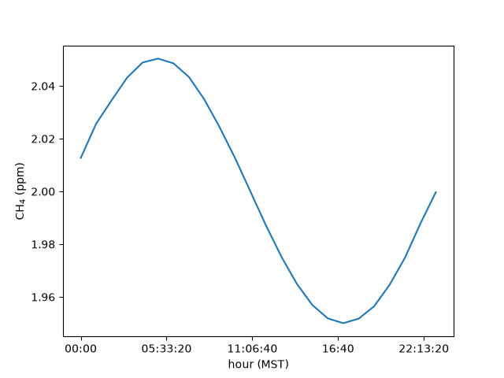

Average a time series by local hour and by season#
This example takes a year of hourly data stamped in UTC, moves it to local time, and averages it by hour of the day, over the afternoon, and by season. Three rules come out of it:
A time without a time zone is UTC in lair’s functions that take a time, such as
get_soundings()anddt2decimalDate(). The exception isconvert_timezones(), which raises on one unless you givefromtz(the third rule). Convert to local time before you group by hour, or the hours are UTC hours.diurnal()andseasonal()average by hour of the day and by season and year.convert_timezones()does not guess. The shortcuts (UTC2MSTand the rest) name the zone they convert from. The function itself needsfromtzfor a time without a zone, andambiguous=ornonexistent=for a local time that daylight saving time repeats or skips (see Times that will not convert).
This page runs when the docs build, on made-up data.
The data#
A year of hourly methane, in ppm, stamped in UTC. It is made up: a daily cycle that peaks at 12 UTC (5 a.m. in Utah, under the night-time inversion), a seasonal cycle that peaks in January, and noise.
In [1]: import numpy as np
In [2]: import pandas as pd
In [3]: rng = np.random.default_rng(0)
In [4]: times = pd.date_range("2023-12-01", "2024-11-30 23:00", freq="1h") # UTC
In [5]: daily = 0.05 * np.cos(2 * np.pi * (times.hour - 12) / 24)
In [6]: yearly = 0.02 * np.cos(2 * np.pi * (times.dayofyear - 15) / 366)
In [7]: data = pd.DataFrame({"ch4": 2.0 + daily + yearly + rng.normal(0, 0.01, times.size)}, index=times)
In [8]: data.head(3)
Out[8]:
ch4
2023-12-01 00:00:00 1.965339
2023-12-01 01:00:00 1.964464
2023-12-01 02:00:00 1.977184
Local time#
convert_timezones() converts between time zones, and its
shortcuts name the common ones: UTC2MST (UTC to Mountain Standard Time,
always 7 hours behind) and UTC2MTN (UTC to America/Denver, which follows
daylight saving time). driver="pandas" converts the index of a
DataFrame:
In [9]: from lair.clock import UTC2MST
In [10]: local = UTC2MST(data, driver="pandas")
In [11]: local.head(3)
Out[11]:
ch4
2023-11-30 17:00:00-07:00 1.965339
2023-11-30 18:00:00-07:00 1.964464
2023-11-30 19:00:00-07:00 1.977184
Standard time is the same offset from UTC all year, so every day is 24 hours long and noon is noon in January and in July. That is why the afternoon below is in standard time.
By hour of the day#
diurnal() groups the rows by their time of day (rounded down
to freq, an hour by default) and averages each group:
In [12]: from lair.clock import diurnal
In [13]: cycle = diurnal(local)
In [14]: cycle.round(3).head(8)
Out[14]:
ch4
00:00:00 2.013
01:00:00 2.026
02:00:00 2.035
03:00:00 2.043
04:00:00 2.049
05:00:00 2.050
06:00:00 2.049
07:00:00 2.043
In [15]: cycle.plot(xlabel="hour (MST)", ylabel="CH$_4$ (ppm)", legend=False);


The cycle peaks at 05:00 MST, where the made-up data put it. Without the conversion it would peak at 12:00: the same data, labeled in UTC.
The afternoon#
AFTERNOON lists the hours from noon to 4 p.m., standard time. Selecting
those hours and averaging each day gives one afternoon value per day:
In [16]: from lair.clock import AFTERNOON
In [17]: AFTERNOON
Out[17]: [12, 13, 14, 15, 16]
In [18]: afternoon = local[local.index.hour.isin(AFTERNOON)].resample("D").mean()
In [19]: afternoon.round(3).head(3)
Out[19]:
ch4
2023-12-01 00:00:00-07:00 1.985
2023-12-02 00:00:00-07:00 1.990
2023-12-03 00:00:00-07:00 1.983
By season#
seasonal() averages over DJF, MAM, JJA and SON in each year.
A DJF season takes the year of its January and February, so December 2023
counts toward DJF 2024.
In [20]: from lair.clock import seasonal
In [21]: seasonal(local).round(3)
Out[21]:
ch4
season year
SON 2023 1.986
DJF 2024 2.018
MAM 2024 2.000
JJA 2024 1.982
SON 2024 2.000
The data start at midnight UTC on December 1, which is 5 p.m. on November 30 in MST. Those seven hours make an “SON 2023” of their own: a season the data cover only in part is kept, not dropped, so drop it yourself if you do not want it.
Decimal dates#
Some tools, NOAA’s curve-fitting filter among them, count time in decimal
years. dt2decimalDate() and
decimalDate2dt() convert both ways (a time with a time zone
is converted to UTC first):
In [22]: import datetime as dt
In [23]: from lair.clock import decimalDate2dt, dt2decimalDate
In [24]: dt2decimalDate(dt.datetime(2024, 7, 1))
Out[24]: 2024.4972677595629
In [25]: decimalDate2dt(2024.5)
Out[25]: datetime.datetime(2024, 7, 2, 0, 0)
Times that will not convert#
convert_timezones() stops with a ValueError when it would
have to guess. The message says what to add.
A time without a zone, and no fromtz. The shortcuts above pass
fromtz="UTC", which is the first rule at work. Called on its own, the
function does not apply that rule: it asks.
In [26]: from lair.clock import convert_timezones
In [27]: try:
....: convert_timezones(data, "America/Denver", driver="pandas")
....: except ValueError as err:
....: print(err)
....:
Naive times need fromtz: the timezone they are in
In [28]: convert_timezones(data, "America/Denver", fromtz="UTC", driver="pandas").head(2)
Out[28]:
ch4
2023-11-30 17:00:00-07:00 1.965339
2023-11-30 18:00:00-07:00 1.964464
A time that already has a zone, such as local above, needs no fromtz: it
converts from its own.
In [29]: convert_timezones(local, "UTC", driver="pandas").head(2)
Out[29]:
ch4
2023-12-01 00:00:00+00:00 1.965339
2023-12-01 01:00:00+00:00 1.964464
A local time that happens twice, or not at all. Only a zone with daylight
saving time can do this, and only when you convert from it, as MTN2UTC does
(local time in Utah to UTC). In Utah, the clocks go back at 2 a.m. on the first
Sunday in November, so 1:00 to 2:00 happens twice. They go forward on the second
Sunday in March, so 2:00 to 3:00 never happens. A file whose times are
Utah clock time has these hours:
In [30]: from lair.clock import MST2UTC, MTN2UTC
In [31]: fall = pd.DataFrame(
....: {"ch4": range(5)},
....: index=pd.date_range("2023-11-05 00:00", periods=5, freq="1h"),
....: ) # Utah clock time
....:
In [32]: try:
....: MTN2UTC(fall, driver="pandas")
....: except ValueError as err:
....: print(err)
....:
Cannot infer dst time from 2023-11-05 01:00:00, try using the 'ambiguous' argument
ambiguous= says which of the two 1:00s the file means: True the first
(daylight time, 07:00 UTC) or False the second (standard time, 08:00 UTC).
"NaT" gives up on it and leaves a missing time, and "infer" works out
which is which in a file that lists both, in order. Here is the 1:00 row each
way:
In [33]: MTN2UTC(fall, driver="pandas", ambiguous=True).index[1]
Out[33]: Timestamp('2023-11-05 07:00:00+0000', tz='UTC')
In [34]: MTN2UTC(fall, driver="pandas", ambiguous=False).index[1]
Out[34]: Timestamp('2023-11-05 08:00:00+0000', tz='UTC')
An hour that never happened is the same kind of error, and nonexistent= is
the matching option. "shift_forward" moves a 2:00 time to 3:00, so it lands
on the same instant as the real 3:00 row. "shift_backward" moves it to the
last instant before the gap, and "NaT" leaves a missing time:
In [35]: spring = pd.DataFrame(
....: {"ch4": range(5)},
....: index=pd.date_range("2024-03-10 00:00", periods=5, freq="1h"),
....: ) # Utah clock time
....:
In [36]: try:
....: MTN2UTC(spring, driver="pandas")
....: except ValueError as err:
....: print(err)
....:
2024-03-10 02:00:00 is a nonexistent time due to daylight savings time. Try using the 'nonexistent' argument.
In [37]: MTN2UTC(spring, driver="pandas", nonexistent="shift_forward")
Out[37]:
ch4
2024-03-10 07:00:00+00:00 0
2024-03-10 08:00:00+00:00 1
2024-03-10 09:00:00+00:00 2
2024-03-10 09:00:00+00:00 3
2024-03-10 10:00:00+00:00 4
Standard time and UTC have no such hours, so UTC2MTN, UTC2MST and
MST2UTC never raise them. If the instrument that wrote a file kept standard
time all year (its manual or settings say), convert it with MST2UTC and
nothing is ambiguous:
In [38]: MST2UTC(fall, driver="pandas").index[1]
Out[38]: Timestamp('2023-11-05 08:00:00+0000', tz='UTC')
Next#
lair.clock lists the rest, including TimeRange (a start and stop
parsed from strings such as "2024-07").